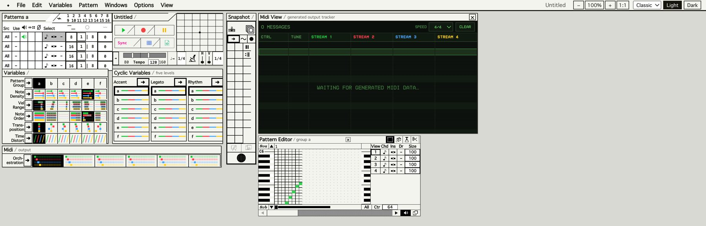
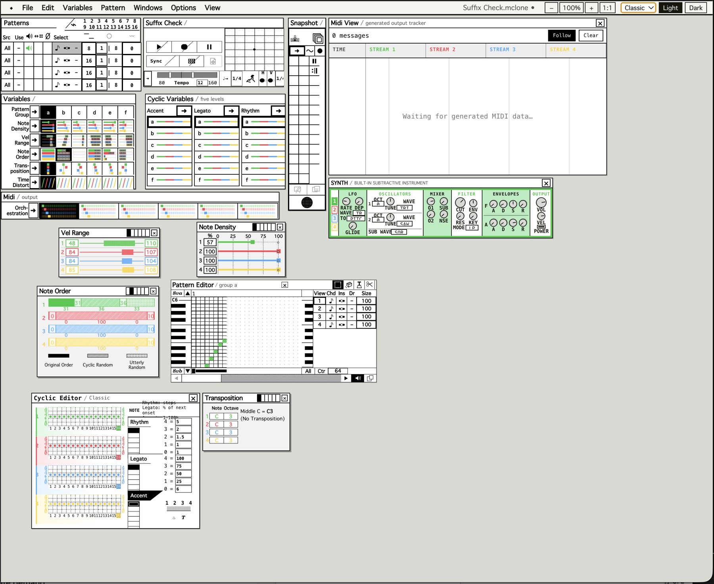
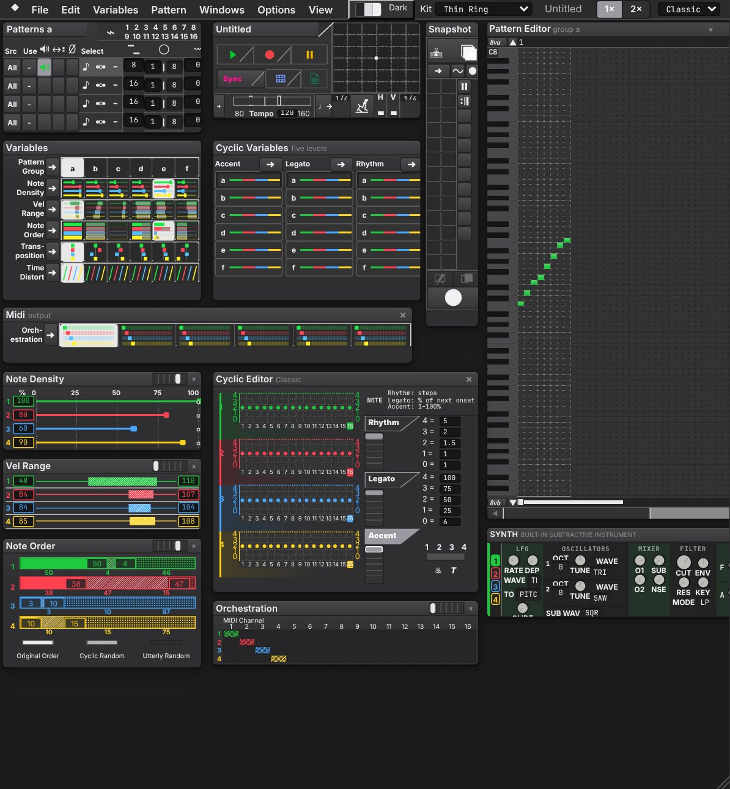
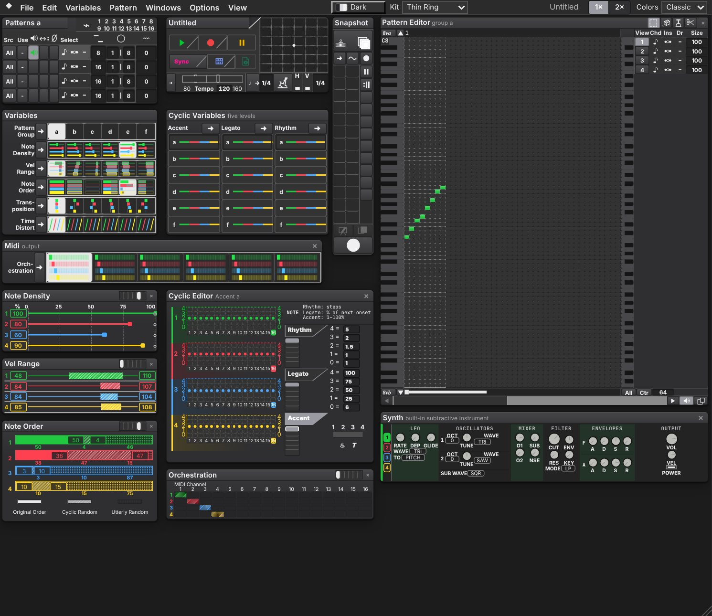

idM
M let you compose by steering processes instead of writing notes. I rebuilt it from its manual alone: first in the browser, as M-Clone, then as idM, which ships as an AU, VST3, CLAP, standalone and browser app and is confirmed working in Ableton Live 12.
Who it’s forComposers and electronic musicians, in a browser or inside their DAW.
ProductAudioBuilt with AI
180manual capabilities, each a test
4 daysfirst commit to public alpha
5formats from one engine
13,225values matched across 3 compilers
The problem
- M's way of composing, with variables, cyclic patterns, conducting and snapshots, has no modern equivalent.
- It had to be faithful without copying a line of the original.
- Musicians live in their DAW, so the composer had to run there, with real MIDI out.
- Plugin hosts pass MIDI through a gate they control and never report. A working engine and a host ignoring it look the same.
What I did
- Ran it as a clean room: the M 2.7 manual decides behavior, screenshots decide only layout.
- Turned the manual into 180 numbered capabilities, each one a test. 163 pass and 17 are exclusions with a reason, checked on every build.
- Shipped the browser version, M-Clone, as a free alpha four days after the first commit.
- Merged 34 contradictory planning docs into one master plan with decisions of record.
- Split the 5,711-line engine into its own library with no browser code, so it could ship as a plugin and run inside idMLab.
- Made the plugin's C++ engine match the TypeScript one exactly: 13,225 values under clang, MSVC and GCC.
- Ported the web interface into the plugin instead of redesigning it.
- Ran a three-stage AI design review: clipped controls went from 17 to 0, and title contrast from 3.7:1 to over 5.6:1.
What changed
- v0.8.0-alpha shipped first, as M-Clone: a single HTML file that opens with no install.
- v0.9.0-alpha followed, as idM, for macOS, Windows and Linux.
- Confirmed in Ableton Live 12. An outside tester reported it passing MIDI on Linux.
- 3,471 automated tests on the browser version, and 921 on the plugin.
- The engine now runs as a module inside idMLab.
Decisions
- An instrument with MIDI out, never a MIDI-effect VST3.Ableton rejects that shape. The reasoning is cited to the line in the plugin framework.
- Test the seam the user stands on.The AU looked dead in Ableton for three days while every test passed. I added a notes-sent counter and a virtual MIDI port.
- Rust to C++, a day and a half in.The reason for Rust disappeared, so I reversed the engine language and wrote down why.
- MIDI file import stays out.It stays out “unless a future workflow creates real user value”. The exclusion is written down with its reason.



